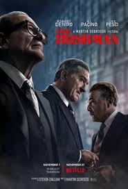

- went to the movies last Friday also : a theater that shows movies
- What's playing at the movies?
2 movies plural : a showing of a motion picture especially in a theater.
3 movies plural : the business of making movies : the motion-picture medium or industry.
-_-let's go-_-
<>1-Lord of The Rings

Un jeune et timide `Hobbit', Frodon Sacquet, hérite d'un anneau magique. Bien loin d'être une simple babiole, il s'agit d'un instrument de pouvoir absolu qui permettrait à Sauron, le `Seigneur des ténèbres', de régner sur la `Terre du Milieu' et de réduire en esclavage ses peuples. Frodon doit parvenir jusqu'à la `Crevasse du Destin' pour détruire l'anneau
<>2-Harry Potter
Harry Potter is a series of novels by J.K. Rowling. It is about a young boy named Harry Potter and his adventures as he attends Hogwarts School of Witchcraft and Wizardry, learns how to perform magic and comes face to face with his archenemy, Lord Voldemort.
<>3-Tronsformers
Une guerre sans merci oppose depuis des temps immémoriaux deux races de robots extraterrestres : les Autobots et les cruels Decepticons. Son enjeu : la maîtrise de l'univers. Dans les premières années du 21ème siècle, le conflit s'étend à la Terre, et le jeune Sam Witwicky devient, à son insu, l'ultime espoir de l'humanité. Semblable à des milliers d'adolescents, Sam n'a connu que les soucis de son âge : le lycée, les amis, les voitures, les filles.
<> +4-Pirates Of The Carribianes
Petite, Elizabeth Swann, la fille du gouverneur, a sauvé de la noyade Will Turner après le naufrage de son bateau. Les années ont passé, Will et Elizabeth ont grandi. Will est devenu forgeron à Port Royal, et Elizabeth se prépare à épouser le commodore Norrington. Cependant, la vie d'Elizabeth bascule lorsque le capitaine Barbossa et sa bande de pirates décident d'attaquer Port Royal et la prennent en otage. Malheureusement pour lui, Barbossa a commis deux erreurs.
<> +5-Fast And Furious
n meurtre oblige Don Toretto, un ancien taulard en cavale, et l'agent Brian O'Conner à revenir à L.A. où leur querelle se rallume. Mais confrontés à un ennemi commun, ils sont contraints à former une alliance incertaine s'ils espèrent parvenir à déjouer ses plans.
<> +6-John Wick
Depuis la mort de sa femme bien-aimée, John Wick passe ses journées à retaper sa Ford Mustang de 1969, avec pour seule compagnie sa chienne Daisy. Il mène une vie sans histoire, jusqu'à ce qu'un malfrat sadique nommé Iosef Tarasof remarque sa voiture. John refuse de la lui vendre. Iosef n'acceptant pas qu'on lui résiste, s'introduit chez John avec deux complices pour voler la Mustang, et tuer sauvagement Daisy.
< +7-Marvel Universe
The Marvel Universe is a fictional universe where the stories in most American comic book titles and other media published by Marvel Comics take place. Super-teams such as the Avengers, the X-Men, the Fantastic Four, the Guardians of the Galaxy, the Defenders, the Midnight Sons, and many Marvel superheroes live in this universe, including characters such as Spider-Man (the main protagonist), Captain America, Iron Man, Thor, the Hulk, Black Widow, Wolverine, Captain Marvel, Black Panther
< +8-Dc Universe
L'univers DC est peuplé de nombreux personnages dotés de super-pouvoirs, super-héros et super-vilains, qualifiés globalement de méta-humains, qui se combattent dans une lutte sans fin. Les principaux super-héros sont Superman, Batman, Wonder Woman (La trinité DC), et leurs collègues de la Ligue de justice d'Amérique : Green Lantern, Flash, Green Arrow, Aquaman.
<> +9-The Mummy
1719 avant J.-C. Pour avoir osé ravir sa fiancée au Pharaon, le grand prêtre Imhotep est momifié vivant et enseveli dans une crypte secrète d'Hamunaptra, mais son coeur bat toujours et la Momie attend l'heure de sa libération. En 1923, l'aventurier O'Connell découvre les ruines d'Hamunaptra. La malédiction d'Imhotep va pouvoir se réaliser.
<> +10-The Irishman
1719 avant J.-C. Pour avoir osé ravir sa fiancée au Pharaon, le grand prêtre Imhotep est momifié vivant et enseveli dans une crypte secrète d'Hamunaptra, mais son coeur bat toujours et la Momie attend l'heure de sa libération. En 1923, l'aventurier O'Connell découvre les ruines d'Hamunaptra. La malédiction d'Imhotep va pouvoir se réaliser.